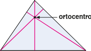
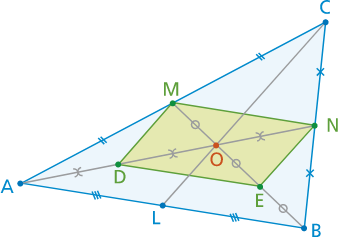

Punti notevoli dei triangoli
In ogni triangolo le tre altezze, o i loro prolungamenti, si incontrano in un punto detto ortocentro del triangolo.
Se il triangolo è acutangolo, allora l’ortocentro è interno al triangolo.
Se il triangolo è rettangolo, allora l’ortocentro coincide con il vertice dell’angolo retto.
Se il triangolo è ottusangolo, allora l’ortocentro è esterno al triangolo.
Assi di un triangolo
Si dice asse di un triangolo relativo a un lato la retta perpendicolare a quel lato nel suo punto medio.
Nel triangolo ABC la retta a è l’asse relativo al lato AB.
Gli assi relativi ai tre lati di un triangolo si incontrano in un punto detto circocentro del triangolo.
Se il triangolo è acutangolo, allora il circocentro è interno al triangolo.
Se il triangolo è rettangolo, allora il circocentro coincide con il punto medio dell’ipotenusa.
Se il triangolo è ottusangolo, allora il circocentro è esterno al triangolo.
In ogni triangolo le tre bisettrici relative ai suoi tre angoli si incontrano in un punto detto incentro.
L’incentro, indipendentemente dalla forma del triangolo, è sempre interno al triangolo;
l’incentro di un triangolo è equidistante dai suoi tre lati
Baricentro
Definizione. Il baricentro (o centro di gravità del triangolo) è il punto d'incontro delle mediane di un triangolo. □
Teorema In un triangolo qualunque le tre mediane passano per uno stesso punto (detto baricentro), che divide ciascuna mediana in due parti, di cui quella contenente il vertice è doppia dell’altra.
Proof. Dato il triangolo ABC, conduciamo le mediane AN, BM dei lati BC e AC e sia O il loro punto di intersezione (v. FIGURA): dimostriamo che OB è doppio di OM e che OA è doppio di ON.
Siano D e E i punti medi rispettivamente di OA e di OB; congiungiamo fra loro tali punti: allora nel triangolo AOB il segmento DE è parallelo ad AB e congruente alla metà di esso (TEOREMA 19 del capitolo LUOGHI GEOMETRICI. PARALLELOGRAMMI). Considerando il triangolo ABC, anche MN è parallelo ad AB e congruente alla sua metà (per lo stesso teorema ora citato), perciò MN e DE sono segmenti paralleli e congruenti fra loro.
Ne segue che il quadrilatero DENM è un parallelogramma, perché ha due lati opposti paralleli e congruenti. In ogni parallelogramma le diagonali si dimezzano scambievolmente, perciò OM ≌ OE e ON ≌ OD, ossia OM è la metà di OB e ON è la metà di OA. Poiché abbiamo dimostrato che due mediane qualsiasi di un triangolo si tagliano in modo che la parte contenente il vertice risulti doppia dell’altra, anche la terza mediana CL deve incontrare una delle precedenti, per esempio BM, in un punto tale da formare su BM due segmenti uno doppio dell’altro.
Tale punto è il punto O e quindi è dimostrato che anche la terza mediana deve passare per il punto di intersezione delle altre due. □